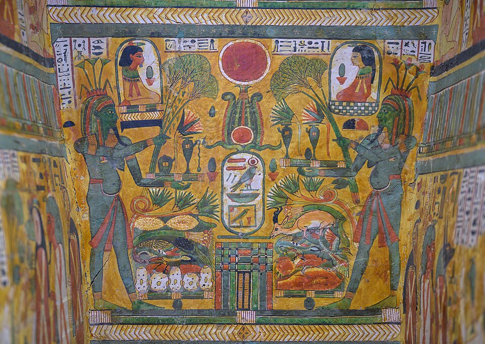

Слово и первые гробы
Слово «саркофаг» — греческое: sarkophágos, «плоть поедающий». Сначала слово называло трояский известняк, якобы впитывавший останки. В Египте умершего сначала сворачивали на циновке, затем появился ящик под мастабой. Знатных хоронили в деревянных и каменных саркофагах; царские — из гранита и базальта, крышки ходили по пазам. Гробы покрывали позолотой и защитными записями.
Среднее царство: расписной ящик
В Среднем царстве нормой стал деревянный гроб: прямоугольный, расписанный сценами повседневности: рыбалка, охота, пиры. Не украшение, а обещание продолжения жизни. На крышке — формула подношения, внутри — Тексты саркофагов (предки Книги мёртвых): заклинания, «сопровождавшие» умершего. На восточном торце крышки рисовали «глаза» — чтобы умерший открыл их при восходе: голова в гробе шла на запад, а с культом Ра — на восток.
Новое царство: антропоморфный и вложенные
В Новом царстве гроб принял человеческую форму: антропоморфные саркофаги с маской на крышке, золочёные. Вершина — набор Тутанхамона: четыре наружных ковчега из позолоченного дуба (5,2 × 3,35 × 2,75 м) с Текстами саркофагов, внутри них — саркофаг из монолита жёлтого кварцита (2,75 × 1,5 × 1,5 м) с горельефами богинь Исиды, Нептиды, Нейт и Селкит по углам и обрамлением джедом и тетом у основания; в кварците — три вложенных антропоидных гроба из дерева и золота. Над мумией — золотая маска 10,23 кг: голубое стекло, лазурит, глаза из полупрозрачного кварца.
«Наборы» жрецов Амона
У жрецов Амона «наборы» гробов достигают апогея: расписные деревянные саркофаги Пинеджема I (XXI династия) и жреца Несихонсу (ок. 976 г. до н. э.). Саркофаг Несихонсу хранится в Художественном музее Кливленда (США), гроб Пинеджема — в ГМИИ в Москве.
Картоннаж и фаюмские портреты
В греко-римское время в дело пошёл картоннаж: слои льна и папируса, промазанные клеем, формованные по телу и расписанные. Он легче и дешевле дерева; поверх него мастер накладывал над лицом мумии натуралистический портрет — «фаюмские мумийные портреты» I–III вв. н. э.: реальные лица двухтысячелетней давности. Старинный обряд — лицо, которое узнаёт ка, — сросся с эллинистическим портретом.